（十） 二分与三分搜索
前面的归并排序把两段分别排好，再合并成完整序列。本章换成查找任务：比较中间位置后排除一段候选，将注意力留在仍可能包含答案的部分；先学二分怎样舍弃一半，再看三分怎样沿曲线缩短区间。
将一个大问题拆成同类的小问题，分别求解，再合并结果，叫作分治。归并排序展示了“拆分、求解、合并”；二分查找则在比较后只保留一半继续查找，每轮都缩小同一个任务的规模。
1. 二分搜索
在升序数组中比较中间项与目标：中间项小于目标时，它左侧也都太小；中间项大于目标时，它右侧也都太大。因此一次比较就能排除一半位置，这就是二分查找。
这个思路还可以用来寻找第一个 true 或最后一个 true。例如速度越大越容易按时完成任务，判定结果就像排好的 false、true；不用真的建立数组，也能二分定位变化的位置。
1.1 整数二分
整数二分用于在 有序的整数数组 中查找某个元素，或者寻找一个满足某种性质的边界点。这是最经典的二分应用。
1.1.1 查找一个等于目标的元素
题目原文（自拟）： 输入一个升序（允许相等）的整数 vector arr 与整数 target，数组长度和下标均在 int 范围内。返回某个满足 arr[index]=target 的下标；不存在返回 -1。允许空数组；有重复值时不要求最左位置。
思路分析： 维护闭区间 [left,right]，只有其中可能存在答案。中点等于 target 就返回；中点较大时，升序保证中点及其右侧都不可能匹配，令 right=mid-1；中点较小时对称地令 left=mid+1。每轮保留全部可能答案且至少删除中点，区间最终为空则无解。
手算与复杂度： arr=[1,2,3,4,5,6,7,8,9,10]，target=7。候选下标 [0,9] 的中点 4 对应 5，保留 [5,9]；中点 7 对应 8，保留 [5,6]；中点 5 对应 6，保留 [6,6]，找到下标 6。每轮候选约减半，时间 O(log(n+1))，额外空间 O(1)。
练习题： 洛谷 P2249 — 查找（要求第一次出现，应使用接下来的下界方法）。
#include <vector>
using namespace std;
int Binary_Search(int target, vector<int> &arr) {
int left = 0, right = static_cast<int>(arr.size()) - 1;
while (left <= right) {
int mid = left + (right - left) / 2; // 在非负下标区间中避免 left+right 溢出
if (arr[mid] == target)
return mid;
else if (arr[mid] > target)
right = mid - 1;
else
left = mid + 1;
}
return -1;
}示例：
传入数组：1 2 3 4 5 6 7 8 9 10
可以把每次选择的中点画成下面的判定树；二分算法本身在数组上操作，并不实际构造这棵树。
平均查找长度 \(ASL=\frac{\sum{查找路径长度}}{节点数}=\frac{1+2×2+3×4+4×3}{10}=2.9\)
1.1.2 边界查找（lower_bound / upper_bound）
题目原文（自拟）： 给定升序整数 vector arr 与 target，返回第一个 >=target 的下标 lower，以及第一个 >target 的下标 upper。若某种位置不存在，返回数组长度 n，空数组返回 0；两个函数均不直接读取返回位置。
思路分析： 使用半开区间 [left,right)。下界将“arr[mid]>=target”作为真，否则在右侧查找；上界仅将“arr[mid]>target”作为真。真时令 right=mid 保留当前候选，假时令 left=mid+1 排除当前位置。目标条件沿升序数组从假到真，循环结束位置就是第一个真，也可能为 n。
样例与解释： arr=[1,2,2,2,4]、target=2 时 lower=1、upper=4，重复段是 [1,4)；target=3 时两者均为 4；target=5 时均为 5，不能读 arr[5]。每个函数 O(log(n+1)) 时间、O(1) 空间。
练习题： 洛谷 P2249 — 查找。
在 STL 的 <algorithm> 小节中使用的 lower_bound 与 upper_bound，就是用二分定位升序区间里的位置。
它们的原型是：
寻找第一个 ≥ target 的位置（lower_bound）
对 [1,2,2,2,4] 查 target=2，左边界每轮判断 a[mid]>=2，得到区间 [0,5)→[0,2)→[0,1)→[1,1)；右边界判断 a[mid]>2，得到 [0,5)→[3,5)→[3,4)→[4,4)。相等时两种判断保留的方向不同，最终等值位置为 [1,4)。返回 n 是合法的边界结果，但不是可读取的元素下标。
#include <vector>
#include <algorithm>
using namespace std;
int lower_bound(const vector<int> &arr, int target) {
int left = 0, right = arr.size(); // 注意右边界是 n
while (left < right) {
int mid = left + (right - left) / 2; // 防止整数溢出
if (arr[mid] >= target)
right = mid; // 收紧右边界，继续在左半部分查找
else
left = mid + 1; // 收紧左边界，在右半部分查找
}
return left; // 返回第一个 >= target 的下标
}寻找第一个 > target 的位置（upper_bound）
#include <vector>
#include <algorithm>
using namespace std;
int upper_bound(const vector<int> &arr, int target) {
int left = 0, right = arr.size();
while (left < right) {
int mid = left + (right - left) / 2; // 防止整数溢出
if (arr[mid] > target)
right = mid; // 收紧右边界，继续在左半部分查找
else
left = mid + 1; // 收紧左边界，在右半部分查找
}
return left; // 返回第一个 > target 的下标
}1.1.3 查找前驱与后继
题目原文（自拟）： 给定升序整数 vector arr 与 target。如果存在相等值，函数 bin_search 返回其中一个相等下标；若不存在，则返回最后一个小于 target 的位置；所有值都大于 target 或数组为空时返回 -1。遇到相等值立即返回，因此重复值中找到哪一项取决于二分访问次序；查找最后一个不大于 target 的位置时，使用前面的 upper_bound 再向前一项。
分析与样例： 除维护候选区间外，result 记目前见到的最大合法前驱下标。中点较小时记录它并向右查找，尝试更靠右的前驱；较大时向左。arr=[1,3,3,7]、target=4 时返回 2，target=0 时返回 -1，target=3 时可以返回 1 或 2。若严格要求“最后一个 <=target”，应使用 upper_bound-1，而不能提前返回任意相等位置。时间 O(log(n+1))、空间 O(1)。
练习题： 洛谷 P1102 — A-B 数对（上下界统计等值段，区分重复下标数量）。
寻找目标值或目标值的前驱
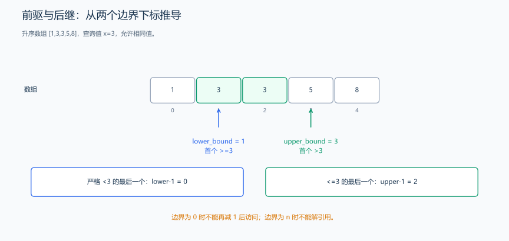
以 [1,3,3,7] 为例，找 0 的严格前驱时，lower_bound 返回 0，左侧没有元素；找 8 的后继时，lower_bound 返回 4，它是数组之后的位置。代码用 -1 表示未找到，用 0…3 表示实际元素位置。
#include <vector>
using namespace std;
int bin_search(const vector<int> &arr, int target) {
int left = 0, right = static_cast<int>(arr.size()) - 1;
int result = -1; // 记录前驱位置
while (left <= right) {
int mid = left + (right - left) / 2;
if (arr[mid] == target) {
return mid; // 找到目标值，直接返回
} else if (arr[mid] < target) {
result = mid; // 记录可能的前驱位置
left = mid + 1; // 继续在右半部分查找目标值
} else {
right = mid - 1; // 在左半部分查找
}
}
return result; // 返回前驱位置或-1
}整数二分在离散下标或离散答案上搜索。首先确定区间约定和循环不变量，再选择中点与更新方式；不是只凭函数名字决定向上还是向下取整。
| 目标 / 写法 | 区间与中点 | 满足条件时 | 不满足时 | 无解表示 |
|---|---|---|---|---|
| 精确查找 | 闭区间，mid = l + (r-l)/2 |
相等直接返回 | 按大小更新 l = mid+1 或 r = mid-1 |
-1 |
第一个 >= x |
[l,r)，向下中点 |
r = mid |
l = mid+1 |
返回 n |
第一个 > x |
[l,r)，向下中点 |
r = mid |
l = mid+1 |
返回 n |
| 最后一个可行点 | 闭区间，mid = l + (r-l+1)/2 |
l = mid |
r = mid-1 |
需先保证至少一个可行点 |
这里的上取整写法要求 r-l+1 可表示。两端相邻时，l = mid 需要上中点避免停在原地；r = mid 的对称写法则使用下中点。upper_bound 返回第一个严格大于目标的位置，并不是“最右位置”。
不严格前驱（最后一个 <= x）可以用 upper_bound 返回下标减一；严格前驱（最后一个 < x）用 lower_bound 返回下标减一；严格后继就是 upper_bound，返回 n 时表示不存在。
例题：
1.1.4 两数之和：二分查找互补值
题目原文（自拟示例）： 给定升序数组和目标和，返回两个不同下标；不存在返回 (-1, -1)。元素与目标在所用整数类型范围内。
思路分析： 双指针以 left < right 保证不同下标；二分版本只在 i 后面的区间找互补值。分别为 O(n) 和 O(n log n) 时间。
样例与解释： [1, 2, 4, 7]、目标 9，返回 (1, 3)；[3]、目标 6，返回 (-1, -1)。
给定一个有序数组和目标值 \(target\)，寻找数组中是否有两个数之和为目标值, 找到则返回这两个数的下标
前面我们已经使用头尾双指针法解决了这个问题，现在我们尝试用整数二分
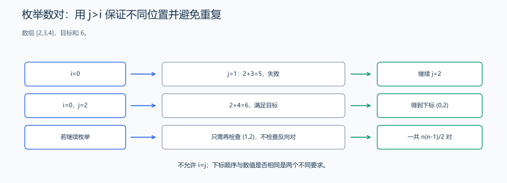
固定一个位置后，只在其右侧查找互补值，保证下标不同。
#include <vector>
#include <utility>
using namespace std;
pair<int, int> twoSumBinary(const vector<int> &arr, int target) {
int n = arr.size();
for (int i = 0; i < n; i++) {
long long need = 1LL * target - arr[i]; // 计算需要的互补值
// 在 (i+1 ... n-1) 范围内二分查找 need
int left = i + 1, right = n - 1;
while (left <= right) {
int mid = left + (right - left) / 2; // 防止整数溢出
if (arr[mid] == need)
return {i, mid}; // 找到匹配对
else if (arr[mid] < need)
left = mid + 1; // 在右半部分继续查找
else
right = mid - 1; // 在左半部分继续查找
}
}
return {-1, -1}; // 无解
}可以看到，时间复杂度相较于双指针法的 \(O(n)\) 还是慢了些，但是逻辑也比较清晰
1.2 实数二分
实数二分用于在 连续的实数区间 上求解问题，例如求方程的根、函数的零点等。常见于：
- 求开方、开立方
- 求最短时间、最小距离
- 几何问题（切蛋糕、切绳子）
- 求方程的根
与整数二分处理的“离散化数据”不同，实数二分面对的是数学意义上的连续区间。在连续区间中不存在跳点，因此 mid 不需要取整，也不需要考虑向上或向下的问题，直接使用：double mid = (left + right) / 2.0 即可。
不过需要注意：计算机并不具有真正的连续性。 double 和 float 只能表示有限精度的浮点数，因此实数二分本质上是在一个“有限精度的浮点集合”内不断逼近答案，而不可能无限细分。
因此，实数二分的停止条件不是“区间缩为一个点”，而是：
- 区间长度达到给定精度：
right - left < eps - 或者迭代次数足够多：固定迭代次数，例如 100 次；次数应结合初始区间和所需误差选择
浮点舍入可能让 mid 等于端点，区间不再缩小。使用精度条件时，应加最大迭代次数或检查是否停滞；固定次数也不能突破浮点表示精度。
实数二分的基本形式如下：
// 伪代码：保存左右端点，用 check(mid) 决定保留哪一半。
/*
* 实数二分模板
*
* 该模板用于在浮点数范围内进行二分查找，解决连续函数求根、最优值查找等问题。
* 通过设置精度阈值或固定迭代次数来控制搜索精度，避免无限循环。
*
* 参数 left：搜索区间左边界
* 参数 right：搜索区间右边界
* 参数 check：判断函数，确定mid满足条件的哪一侧
*
* 注意：时间复杂度: O(log(n))，其中n = (right-left)/eps
* 注意：空间复杂度: O(1)，仅使用常数级别的额外空间
* 注意：精度控制: 使用eps控制精度或固定迭代次数保证收敛
* 注意：应用场景: 连续函数求根、最优值搜索、数值计算等
* 注意：与整数二分区别: 边界处理不同，直接赋值mid而非mid±1
*/
const double eps = 1e-7; // 精度控制，根据问题要求调整
for (int iter = 0; iter < 200 && right - left > eps; ++iter) { // 或者使用 for(int i = 0; i < 100; ++i)
double mid = left / 2 + right / 2; // 计算中点，并避免异号大端点的差溢出
if (mid == left || mid == right) break; // 浮点中点不再变化时停止。
if (check(mid))
right = mid; // mid满足条件，在左半部分继续搜索
else
left = mid; // mid不满足条件，在右半部分继续搜索
}注意： 理想实数计算中，迭代 k 次后区间长度为初始长度的 \(2^{-k}\)。这不是浮点答案实际具有同样精度的保证。停止条件要同时考虑区间尺度、误差要求和浮点舍入。
使用示例：
1.2.1 求平方根
题目原文（自拟示例）： 给定有限非负 double x，返回其平方根的浮点近似值；负数或非有限输入抛出异常。
思路分析： 在覆盖答案的非负区间二分，用 mid > x/mid 代替平方比较来避免溢出。有限次迭代及中点停滞检查保证结束，实际精度受浮点表示限制。
样例与解释： x=0 返回 0；x=2 约为 1.4142135623730951；x=0.25 约为 0.5。
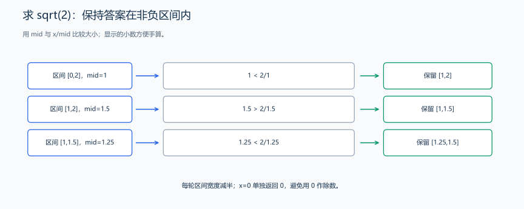
以 x=2 为例，在非负区间比较 mid 与 x/mid，保留包含平方根的一侧；用除法避免 mid*mid 溢出。
#include <algorithm>
#include <cmath>
#include <stdexcept>
using namespace std;
double sqrt_binary(double x) {
if (x < 0 || !isfinite(x))
throw invalid_argument("x 必须是有限非负数");
if (x == 0)
return 0;
double left = 0, right = max(1.0, x);
for (int i = 0; i < 1100; ++i) {
double mid = left + (right - left) / 2;
if (mid == left || mid == right)
break;
if (mid > x / mid)
right = mid; // 避免 mid*mid 溢出
else
left = mid;
}
return left;
}1.2.2 二分法求方程的根
题目原文（自拟示例）： 给定有限区间 [a,b] 和连续函数 f，要求端点已为零或两端函数值异号，返回区间内一个根的近似值。计算过程中出现非有限函数值时抛出异常。
思路分析： 连续曲线的一端在横轴下方、一端在横轴上方，中间就会经过横轴。计算中点后，保留两端仍在横轴两侧的那一半，零点就在这个越来越短的区间中。
样例与解释： f(x)=x²-2、区间 [0,2]，返回约 1.4142135623730951；f(x)=x、区间 [0,1]，直接返回端点 0。
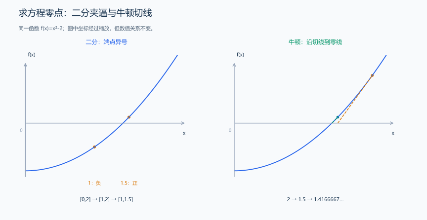
左图让零点留在两个端点之间，再不断缩短区间；右图画当前点的切线，取它与横轴的交点作为下一次位置。下文分别手算这两种更新。
接口衔接： 这里的 function<double(double)> f 用前面的 std::function 章节同样的读法：传入一个 double，得到一个 double；调用 f(mid) 交给调用者提供的公式。<cmath> 的 isfinite 检查结果是否有限，后面的 fabs 求浮点绝对值；<stdexcept> 的 runtime_error 表示运行过程中未能满足条件，与 invalid_argument 的参数错误类别不同，均可通过异常对象的 what 获取说明。
#include <functional>
#include <cmath>
#include <stdexcept>
using namespace std;
double solve_root_binary(double a, double b, function<double(double)> f) {
if (!isfinite(a) || !isfinite(b) || a > b)
throw invalid_argument("区间无效");
// 先处理端点就是零点的情况，再检查夹逼条件。
double fa = f(a), fb = f(b);
if (!isfinite(fa) || !isfinite(fb))
throw invalid_argument("函数值必须有限");
if (fa == 0)
return a;
if (fb == 0)
return b;
if ((fa < 0) == (fb < 0))
throw invalid_argument("端点须异号或已经为零");
for (int i = 0; i < 100; ++i) {
double mid = a / 2 + b / 2;
if (mid == a || mid == b)
break;
double fm = f(mid);
if (!isfinite(fm))
throw invalid_argument("函数值必须有限");
if (fm == 0)
return mid;
// 中点与左端同号时舍弃左半段，否则舍弃右半段。
if ((fm < 0) == (fa < 0)) {
a = mid;
fa = fm;
} else
b = mid;
}
return a / 2 + b / 2;
}二分代码解释： 端点为零时直接返回；否则检查异号条件。中点与左端同号时，左端移动到中点；异号时，右端移动到中点。这样每次仍保留含有零点的夹逼区间。连续曲线从负值连到正值时会经过 0，这就是介值定理的直观含义。曲线即使途中上下起伏，我们仍能沿符号变化找到其中一个零点。
固定 100 次是本实现的迭代上限。若把允许误差记为 eps、初始宽度记为 L，理论上需约 \(\log_2(L/eps)\) 轮，每轮另需一次函数求值。浮点数能表示的位置有限，中点与端点相同时，代码结束迭代；此时继续计算同一个中点也不会让区间再缩小。函数对象本身的求值时间和存储也要另计。
牛顿迭代的推导： 当前点为 (x,f(x))，切线方程为 \(y=f(x)+f'(x)(t-x)\)。令 y=0，得到下一次估计 \(t=x-f(x)/f'(x)\)。这一步使用局部切线逼近曲线；它不像二分那样始终持有夹逼区间，所以初值和导数会影响结果。
本节仍以 f(x)=x²-2 为例，导数为 2x。从 x=2 开始，先得到 1.5，再得到约 1.4166667，逐渐接近 sqrt(2)。代码先计算 f(x)：它与 0 的差已不超过 eps 时返回 x；否则计算导数和下一个点。若从 x=0 开始，导数 2x 为 0，代码在执行除法前抛出异常。
代码示例：
#include <functional>
#include <cmath>
#include <stdexcept>
using namespace std;
double newton_method(double x0, function<double(double)> f, function<double(double)> df,
double eps = 1e-7, int max_iter = 100) {
if (!isfinite(x0) || !isfinite(eps) || eps <= 0 || max_iter <= 0)
throw invalid_argument("初值、误差或迭代次数无效");
double x = x0;
for (int i = 0; i < max_iter; ++i) {
double fx = f(x);
if (!isfinite(fx))
throw runtime_error("函数值不有限");
if (fabs(fx) <= eps)
return x; // 返回前检查残差，而非只检查步长。
double dfx = df(x);
if (!isfinite(dfx) || dfx == 0)
throw runtime_error("导数无效或为零");
double next = x - fx / dfx;
if (!isfinite(next) || next == x)
throw runtime_error("迭代溢出或停滞");
x = next;
}
if (isfinite(f(x)) && fabs(f(x)) <= eps)
return x;
throw runtime_error("达到迭代上限但残差仍超出阈值");
}每轮用当前 x 计算函数值与切线。上面的程序以 |f(x)|<=eps 表示函数值已足够接近 0；导数为零、计算结果非有限、迭代位置不再变化或次数用完时，走到对应的异常分支。它比较的是函数值与 0 的差；若要衡量位置与真实根的距离，还可以在这个平方根例子中计算 |x-sqrt(2)|。
两种方法对比：
| 项目 | 牛顿迭代法 Newton | 二分法 Binary Search |
|---|---|---|
| 怎样推进 | 计算当前点的切线，用切线与横轴的交点得到下一点 | 在横轴两侧取端点，计算中点并保留异号的一半 |
| 是否需要导数 | 需要 f’(x) | 不需要 |
| 从哪里开始 | 本例从 x=2 开始画第一条切线 | 本例从 [0,2] 开始，f(0)<0、f(2)>0 |
| 每轮的变化 | 本例为 2→1.5→1.4166667→1.4142157 | 本例区间宽度为 2→1→0.5→0.25 |
| 保留哪些信息 | 保存当前点，重新计算函数值与导数 | 保存两端，使零点继续留在中间 |
| 代码复杂度 | 中等：需要传入导数函数 | 简单：只有区间取 mid |
| 适合问题类型 | 可计算导数的方程零点近似 | 连续函数的零点夹逼；整数二分另见单调判定问题 |
| 每次迭代成本 | 计算 f 和 f’，成本由具体函数决定 | 计算一次 f(mid)，成本由具体函数决定 |
| 后续联系 | 用导数确定更新方向；还可学习求极值的迭代 | 用判断舍弃一半；整数二分与二分答案也沿这个思路 |
| 怎样结束 | 函数值足够接近 0 时返回；程序另外处理无法继续迭代的分支 | 按迭代次数缩短区间，中点与端点相同时结束 |
1.2.3 与整数二分的对比
| 特性 | 整数二分 | 实数二分 |
|---|---|---|
| 数据结构 | 数组 / 离散值 | 连续区间 |
| 终止条件 | left > right 或 left == right |
区间长度 < 精度 |
| mid 的计算 | 整数 | double/long double |
| 判断依据 | 比较中间值，或观察判定结果的真假变化 | 比较函数值，或观察函数值的正负变化 |
| 场景 | 查找值、边界 | 求根、求最优值、几何问题 |
注意： 根据二分思想和二叉搜索树的性质，我们可以写出二叉搜索树的插入算法
下列 insert_BST 是类内成员片段，需放入前面 BinaryTree 的 public 区域，并从空树开始使用 BST 插入；不能与层序插入或普通树删除混用。
首先，二叉搜索树的性质：左子树的所有节点值 < 当前节点值 < 右子树所有节点值。
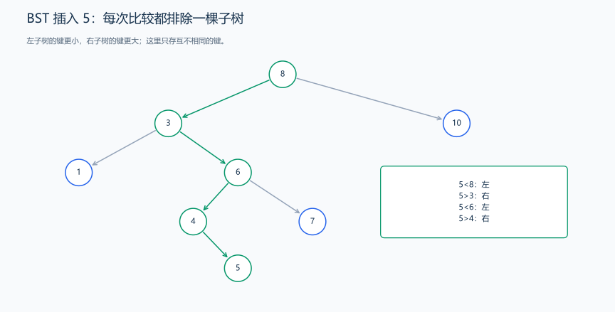
插入 5 时依次与 8、3、6、4 比较，最后放到 4 的右孩子。普通 BST 的代价取决于树高。
bool insert_BST(int value) {
// 处理空树情况：直接创建根节点
if (!root) {
root = new TreeNode(value);
return true;
}
TreeNode *cur = root;
// 迭代查找合适的插入位置
while (true) {
if (value < cur->val) {
// 值小于当前节点，向左子树查找
if (cur->left)
cur = cur->left; // 左子树非空，继续向下查找
else {
cur->left = new TreeNode(value); // 找到空位置，插入新节点
return true;
}
} else if (value == cur->val) {
return false; // 本笔记的 BST 不存重复值
} else {
// 值大于当前节点，向右子树查找
if (cur->right)
cur = cur->right; // 右子树非空，继续向下查找
else {
cur->right = new TreeNode(value); // 找到空位置，插入新节点
return true;
}
}
}
}当然，因为这是普通 BST，而不是 AVL 树或者 Treap 树，输入严格有序的话，该二叉树会退化（若升序则退化为只有右子树的链表，降序则退化为只有左子树的链表）
例如：
输入：
1 2 3 4 5 6 7 8 9 10构建的二叉树为：
输入：
10 9 8 7 6 5 4 3 2 1构建的二叉树为：
输入
4 7 9 6 5 3 1 8 2 10构建如下二叉树：
1.3 二分答案
二分答案是一种 解题策略，它本身使用的是二分查找的技术。当一个问题直接求解很困难，但我们可以 轻易地判断一个候选答案 x 是“偏大”还是“偏小” 时，就可以使用二分答案。
适用问题特征：
- 问题的解在某个确定的范围内
[min, max]。 - 这个范围内的值相对于问题的条件存在单调性。例如，如果
x可行，那么所有<= x（或>= x）的值也可能可行。 - 存在一个
check(x)函数，可以高效地判断给定的x是否是一个可行的解。
常见题型：
- 最小化最大值 / 最大化最小值
- Koko 吃香蕉
- 分配工作、分配书本
- 木棒切割、绳子切割
- 最小花费 / 最大利润可行性
- 图论中的最小可行路径（比如最大边最小、最小边最大）
示例：
1.3.1 最小吃香蕉速度（Koko，LeetCode 875）
接口与范围： 给定非空正整数堆数组 piles 和小时 h，保证 h 至少等于堆数。每小时只能从一堆吃至多 k 根，求按时吃完的最小正整数 k。
思路分析： 用 ceil(pile/k) 统计小时，速度越大越容易完成。二分最小可行速度，时间 O(n log maxPile)。
样例与解释： piles=[3,6,7,11]、h=8，返回 4；各堆用时 1、2、2、3 小时。
珂珂喜欢吃香蕉。这里有 n 堆香蕉，第 i 堆中有 piles[i] 根香蕉。警卫已经离开了，将在 h 小时后回来。
珂珂可以决定她吃香蕉的速度 k （单位：根/小时）。每个小时，她将会选择一堆香蕉，从中吃掉 k 根。如果这堆香蕉少于 k 根，她将吃掉这堆的所有香蕉，然后这一小时内不会再吃更多的香蕉。
珂珂喜欢慢慢吃，但仍然想在警卫回来前吃掉所有的香蕉。
返回她可以在 h 小时内吃掉所有香蕉的最小速度 k（k 为整数）。
题目分析：对于一个给定的速度 k，我们可以计算吃完所有香蕉需要多少小时。如果所需小时数 <= h，则速度 k 是可行的；否则速度太慢。
判断 k 是否可行的方法：
对每一堆香蕉 piles[i]：
吃完这一堆需要的小时数为：\(hours=⌈piles[i]/k⌉\)
因为每小时只能吃一个堆，剩余不足 k 时，这个堆仍占用当前一小时；下一小时再吃另一个堆。
将所有堆的小时数加和：\(total_hours=∑⌈piles[i]/k⌉\)
题解：
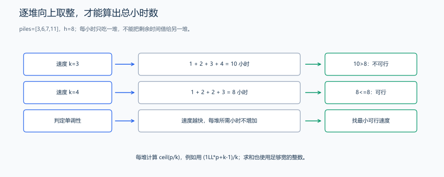
每堆分别占完整小时；速度 3 共需 10 小时，不满足 h=8，速度 4 共需 8 小时，恰好可行。
对 [3,6,7,11]、h=8，初始速度范围 [1,11]。中点 6 需要 6 小时，可行，保留 [1,6]；中点 3 需要 10 小时，失败，排除 1…3；随后 5、4 都恰好需要 8 小时，依次收缩到 [4,4]。所求是第一个可行速度，失败时移到 mid+1，成功时仍保留 mid。
#include <vector>
#include <algorithm>
using namespace std;
using ll = long long;
bool check(const vector<int> &piles, int k, int h) {
ll hours = 0; // 用 long long 防止大数相加溢出
for (int p : piles)
hours += (1LL * p + k - 1) / k; // 等价于 ceil(p / k)，耗时累加
return hours <= h; // 若总时间不超过 h，则速度可行
}
int minEatingSpeed(vector<int> &piles, int h) {
int left = 1, right = *max_element(piles.begin(), piles.end());
while (left < right) {
int mid = left + (right - left) / 2;
if (check(piles, mid, h))
right = mid; // mid 足够快，尝试更小的速度
else
left = mid + 1; // mid 对应的耗时过长，继续查找更高速度
}
return left; // 返回最小可行速度
}1.3.2 木材切割：寻找最长可行长度
题目原文（自拟教学题）： 函数输入非空、有限非负木条长度 vector a 和整数 k>=1，允许舍弃余料但不允许拼接，求能切出至少 k 段等长木条的最大长度；全为 0 时返回 0。返回近似 double，按调用者输出精度格式化。
接口与范围： 给定非空有限非负木条长度数组和 k>=1，切出至少 k 段等长木条，允许丢弃余料，求最大长度；所有长度为 0 时返回 0。
思路分析： 试探长度越大，可切段数越少；floor(length/guess) 累加达到 k 就停止，以避免计数溢出。二分返回近似值。
样例与解释： 长度 [5,8]、k=3，答案为 4，可从两根分别切出 1、2 段。
给定若干木棒，它们的长度分别为 a[1] , a[2] , ... , a[n]，需要从中切出 至少 k 根 等长的小木棒。
每次切割不会损失木材（也就是不能粘合，只能切割）。
问：能够切出的所有小木棒长度的最大值是多少？（保留两位小数）
题目分析：
对于一个给定测试长度 \(len\)，则可切出数量为 \(total=∑_{i=1}^n⌊\frac{a[i]}{len}⌋\)
如果 \(total >= k\) 说明 \(len\) 可行，可以尝试更长长度，否则太长，需要缩短
由于题目要求保留两位小数，因此这是个实数二分的二分答案
题解：
长度 4 时，[5,8] 分别提供 1、2 段，共 3 段；长度 5 时只剩 2 段，不能拼接余料。
对 [5,8]、k=3，从 [0,8] 开始。长度 4 提供 3 段，左端升到 4；长度 6、5、4.5 都只有 2 段，右端依次下降。每次只使用各根木材的完整段，余料不能跨木材拼接。程序继续固定轮数，最终返回可行一侧的 left，图中前几轮展示的就是这个更新规则。
#include <vector>
#include <algorithm>
#include <cmath>
#include <stdexcept>
using namespace std;
using ll = long long;
bool check(const vector<double> &a, double len, int k) {
ll cnt = 0;
for (double x : a)
if (len <= 0)
return false;
else if (floor(x / len) >= k - cnt)
return true;
else
cnt += static_cast<ll>(floor(x / len));
return cnt >= k; // 总段数是否满足要求
}
double maxCutLength(const vector<double> &a, int k) {
if (a.empty() || k <= 0)
throw invalid_argument("木棒非空且 k > 0");
double left = 0, right = *max_element(a.begin(), a.end());
for (int i = 0; i < 100; ++i) {
double mid = left + (right - left) / 2;
if (mid == left || mid == right)
break;
long long count = 0;
for (double x : a) {
double pieces = floor(x / mid);
if (pieces >= k - count) {
count = k;
break;
}
count += static_cast<long long>(pieces);
}
if (count >= k)
left = mid;
else
right = mid;
}
return left;
}1.3.3 最小化最大值：寻找第一个可行上限
定义：在一个集合或可行域内，找到一个点或策略，使得在所有可能的最坏情况（最大值）中，这个最坏情况是最好的（最小化）。
表达式：\(\min_{x \in X} \left( \max_{y \in Y} f(x, y) \right)\)
\(X\) 是决策变量 \(x\) 的可行集（我们能控制的变量）。
\(Y\) 是对 \(x\) 产生影响的干扰变量 \(y\) 的可行集（我们不能控制的变量，代表最坏情况）。
\(f(x, y)\) 是目标函数。
在二分法下：
\[\text{目标：} \min ( \max \{ \text{集合中的值} \} )\]
单调性： 如果存在一个方案使得最大值 \(\leq K\)，那么对于任何 \(K' > K\)，也一定存在方案使得最大值 \(\leq K'\)。
- 我们便可以用二分法来搜索这个最小的 \(K\)。
分摊工作的目标是最小化最大工作量；上面的木材切割则是在可行长度中求最大值，应寻找最后一个可行点。
示例：
1.3.4 任务分段：最小化最大工作量
题目原文（自拟教学题）： 输入非空正整数工作量数组 W 和 M>=1，将任务分为不超过 M 个连续非空段，最小化所有段和的最大值；返回 long long，所有总和可表示。
接口与范围： 给定非空、正整数工作量数组 W 和 M>=1，把它分成不超过 M 个连续非空段，求最大段和的最小值；总和在 long long 范围内。
思路分析： 猜一个上限，依次装入当前段，超过就另开一段；所需段数不超过 M 即可行。上限越大越容易可行，二分最小可行值。
样例与解释： W=[7,2,5,10,8]、M=2，返回 18，对应 [7,2,5] 与 [10,8]。
有 \(N\) 个任务，每个任务的工作量为 \(W_i\)。现在要将这些任务分配给 \(M\) 个人，要求分配给每个人的任务是 连续 的一段。目标是最小化 \(M\) 个人中工作量 最大 的那个人所承担的总工作量。
问题分析：
如果我们设一个最大允许工作量 X，那么我们能否按照不超过 X 的原则把任务分给 不多于 M 个人？
只要判断这个 X 是否可行，就能对答案进行 二分搜索。
题解：
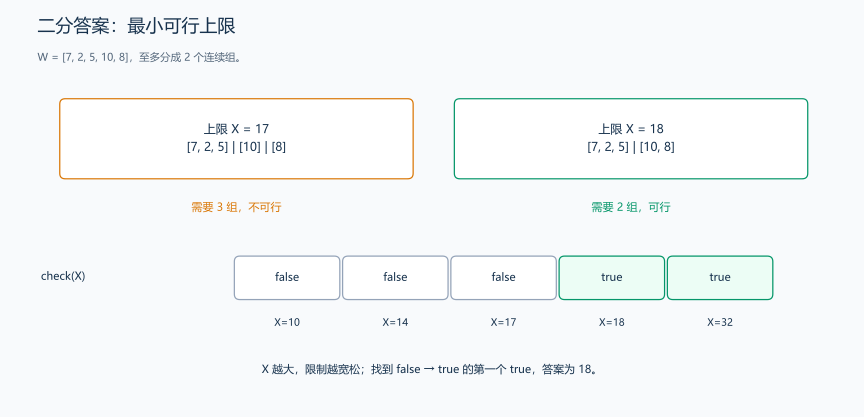
图中的 17、18 分别位于不可行与可行一侧；二分要定位它们之间的边界。
对 [7,2,5,10,8]、M=2，范围先取 [10,32]。上限 21 分两组，可行；上限 15 分三组，不可行；上限 18 分两组，可行；上限 17 分三组，不可行，最后收缩到 18。图中的分组由从左向右累计、放不下才开新组产生，不能任意把非连续任务挪到同一组。
#include <vector>
using namespace std;
using ll = long long;
bool check(const vector<int> &W, ll X, int M) {
ll load = 0; // 当前工人的累计工作量
int cnt = 1; // 已使用的工人数量（至少1个）
for (int w : W) {
if (w > X)
return false; // 单个任务超过 X，直接不可能
if (load + w > X) {
cnt++; // 新开一个工人
load = w; // 新工人从当前任务开始
} else
load += w; // 当前工人继续承担任务
}
return cnt <= M; // 使用的工人数是否在限制内
}
ll minimizeMaxWorkload(vector<int> &W, int M) {
ll left = 0, right = 0;
for (int w : W) {
if (w > left) left = w; // 上限至少要容纳最大的单个任务。
right += w; // 全部任务放一组，得到可行上界。
}
while (left < right) {
ll mid = left + (right - left) / 2;
if (check(W, mid, M))
right = mid; // mid 可行，尝试更小的上限
else
left = mid + 1; // mid 对应的方案不可行，继续尝试更大上限
}
return left; // 返回最小可行最大工作量
}1.3.5 最大化最小值：寻找最后一个可行下限
在一个集合或可行域内，找到一个点或策略，使得在所有可能的最优情况（最小值）中，这个最优情况是最好的（最大化）。（）找到一个策略，使得在所有可能的 最差结果 中，这个最差结果是 最好的。
数学表达式： \(\max_{x \in X} \left( \min_{y \in Y} f(x, y) \right)\)
在二分答案下：
\[\text{目标：} \max ( \min \{ \text{集合中的值} \} )\]
单调性： 如果存在一个方案使得最小值 \(\geq K\)，那么对于任何 \(K' < K\)，也一定存在方案使得最小值 \(\geq K'\)。
- 我们便可以用二分法来搜索这个最大的 \(K\)。
1.3.6 进击的奶牛：最大化最小间距
教学接口题面（自拟）： 给定至少两个牛舍的整数坐标，范围 [0,10⁹]，以及 2<=C<=牛舍数。每个牛舍最多放一头牛，放入 C 头，求最近两头间距的最大可能值；返回整数。坐标数组可被函数排序。
接口与范围： 给定至少两个牛舍坐标，2<=C<=牛舍数，每个位置在 [0,1000000000]。每个牛舍至多放一头牛，求最大化最近两头牛距离的整数答案。
思路分析： 给定间距后总是选择最靠左的可行牛舍；可行间距呈先 true 后 false，二分最后的 true。排序 O(n log n)，二分检查 O(n log D)。
样例与解释： 位置 [1,2,8,4,9]、C=3，返回 3，可选 1、4、8。
农夫约翰建造了一座有 \(n\) 间牛舍的小屋，牛舍排在一条直线上，第 \(i\) 间牛舍在 \(x_i\) 的位置，但是约翰的 \(m\) 头牛对小屋很不满意，因此经常互相攻击。约翰为了防止牛之间互相伤害，因此决定把每头牛都放在离其它牛尽可能远的牛舍。也就是要最大化最近的两头牛之间的距离。
牛们并不喜欢这种布局，而且几头牛放在一个隔间里，它们就要发生争斗。为了不让牛互相伤害。约翰决定自己给牛分配隔间，使任意两头牛之间的最小距离尽可能的大，那么，这个最大的最小距离是多少呢？
题目分析：
如果我们猜一个最小距离 d，要判断能否把 C 头奶牛放置下去：
- 第一头奶牛放在最左的牛棚；
- 后续每次尽量放在距离上一次 ≥
d的最靠前的牛棚； - 数到能否放满
C头。
若能放下，则说明距离 d 可行，可以再增大； 否则 d 太大，需要减小。因此可以使用向上取整的整数二分的二分答案
题解：
排序位置为 [1,2,4,8,9]；距离 3 可在 1、4、8 放三头，距离 4 只能放两头。
距离 3 时先放位置 1；位置 2 与上一次间隔为 1，跳过；位置 4 间隔为 3，可以放；位置 8 间隔为 4，再放一头便达到 C=3，可以返回成功。尽早放置不会挤占右侧空间：将某个方案的下一头左移到最早合法牛舍，前一段间隔仍够，后一段间隔只会增大。
初始距离范围 [0,8]，取向上中点 4，只能放在 1、8 两处，失败，保留 [0,3]；中点 2、3 都能在 1、4、8 放三头，左端依次升高，最后为 3。这里寻找最后一个可行值：成功就把左端移到 mid，失败就把右端移到 mid-1；前面的最小速度题寻找第一个可行值，成功时缩右端，两种目标对应不同的移动方向。
#include <vector>
#include <algorithm>
using namespace std;
bool check(const vector<int> &x, int d, int C) {
int cnt = 1; // 已安置奶牛数量（第一头在x[0]）
int last = x[0]; // 最后一头奶牛的安置位置
for (int i = 1; i < x.size(); i++) {
if (x[i] - last >= d) { // 满足最小间距要求
cnt++;
last = x[i]; // 更新最后安置位置
if (cnt >= C)
return true; // 已安置足够数量，提前返回
}
}
return false; // 无法安置所有奶牛
}
int maxMinDistance(vector<int> &x, int C) {
sort(x.begin(), x.end()); // 预处理：排序牛栏位置
int left = 0, right = x.back() - x.front(); // 最大可能间距
while (left < right) {
int mid = left + (right - left) / 2 + (right - left) % 2; // 取上中位数避免死循环
if (check(x, mid, C))
left = mid; // mid 可行，尝试更大的间距
else
right = mid - 1; // mid 不可行，缩小间距
}
return left; // 返回最大可行最小间距
}1.3.7 分派：最大化每人的切片面积（POJ 3122）
接口与范围： 给定非空非负整数半径数组 radii 和朋友数 F>=0。主人也分一份，总人数为 F+1；每人得到一块面积相等、来自同一个派的切片，允许余料，求最大切片面积。半径转换成面积后，再按总人数计算每份面积。
思路分析： 用 floor(πr²/area) 判断能否凑够人数，人数达到目标就停止。面积越大越难分配，二分最大可行面积。
样例与解释： 半径 [1,1]、朋友数 F=2，总人数 3，答案为 π/2；每个派可切两块。
我的生日快到了，依据传统，我准备给大家分馅饼。我不只有一个馅饼，我有 \(N\) 个馅饼，口味和大小各不相同。有 \(F\) 个朋友会来参加我的派对，他们每个人都会得到一块馅饼。这一块必须是一整块馅饼，而不是几个小块拼凑起来的，并且大小应该一样。当然，我自己也想得到一块馅饼。那一块也应该是完整的一块，并且和其他人的大小相同。
我们每个人能得到多大的一块馅饼？所有的馅饼都是圆柱形的，高度都一样，所以馅饼的大小只取决于它的半径。
题目分析：
有 N 个派和 F 个朋友，加上自己一共 F + 1 个人。 每个派都是高为 1 的圆柱体，但是半径不同。 要求：
- 每个人分到 体积相同 的一块派。
- 只能从 一个派 中切出一块（不能从多个派拼凑）。
- 每个人只能得到 一块 派（不能要多个小块）。
问：每个人能分到的 最大体积 是多少。
每个派面积：\(area[i]=π⋅R_i^2\)
如果我们猜测每个人能分得面积为 A，那么每个派可提供多少份：
若：\(∑cnt[i]≥F+1\)
则说明面积 A 可行，还能尝试更大； 否则说明 A 太大，需要缩小。
因此可以使用实数二分求解
题解：
两个半径 1 的派面积各为 π；每份 π/2 时能提供四份，总人数为 3 时可行，余下的一份不必分配。
两个半径 1 的派、总人数 3 时，把面积按 π 归一化以便手算。每份 0.5π 可得 4 份，提升左端；0.75π、0.625π 都只能得 2 份，降低右端；不断逼近 0.5π。实际代码使用面积单位，friends+1 才是总人数。每个派分别向下取整，剩余碎料不能拼成一份。
#include <vector>
#include <algorithm>
#include <cmath>
#include <stdexcept>
using namespace std;
bool check(const vector<double> &area, double A, int people) {
int cnt = 0;
for (double x : area)
if (A <= 0)
return false;
else if (floor(x / A) >= people - cnt)
return true;
else
cnt += static_cast<int>(floor(x / A));
return cnt >= people; // 总份数是否满足要求
}
double maxPieArea(const vector<int> &radii, int friends) {
if (radii.empty() || friends < 0)
throw invalid_argument("派非空且朋友数非负");
long long people = 1LL * friends + 1;
vector<double> area;
for (int radius : radii)
area.push_back(acos(-1.0) * radius * radius);
double left = 0, right = *max_element(area.begin(), area.end());
for (int i = 0; i < 100; ++i) {
double mid = left + (right - left) / 2;
if (mid == left || mid == right)
break;
long long count = 0;
for (double x : area) {
double pieces = floor(x / mid);
if (pieces >= people - count) {
count = people;
break;
}
count += static_cast<long long>(pieces);
}
if (count >= people)
left = mid;
else
right = mid;
}
return left;
}1.3.8 二分答案的最大值与最小值模板
至此，二分答案的一般模板：
// 伪代码：L/R 保存候选范围，check 计算当前候选值的判定结果。
/*
* 二分答案通用模板
*
* 二分答案是一种基于单调性的高效搜索技术，通过二分查找确定满足条件的最优解。
* 适用于求解最优化问题，如最大化最小值、最小化最大值等。
*/
using ll = long long;
/*
* 检查函数 - 二分答案的核心
*
* 把候选值 x 代入判断，观察判定结果怎样随 x 变化：
* - 对于最大化问题：若x满足条件，则所有≤x的值都满足
* - 对于最小化问题：若x满足条件，则所有≥x的值都满足
*
* 参数 x：待检查的值
* 返回：bool 检查结果
*
* 从一个可行方案出发，改变 x 后仍能复用该方案，就能推导可行方向。
* 注意：实现要点: 根据具体问题设计高效的检查逻辑
*/
bool check(ll x) {
// 判断 x 是否满足题目条件
// 根据题目推导可行方向，再决定二分时缩短哪一侧。
/*
实际应用中除了上述示例的贪心遍历，可能更为复杂：
二分 + BFS/DFS：判断连通性或最短路是否满足限制。
二分 + 动态规划：判断是否存在满足条件的 DP 路径。
二分 + 最大流：网络流问题中的容量判定。
*/
}
/*
* 整数二分答案模板 - 最大化最小值类问题
*
* 适用于求解满足条件的最大值，如：最大最小间距、最大可行值等。
* 单调性：若mid满足条件，则所有≤mid的值都满足，目标是找到最大的满足条件的值。
*
* 返回：ll 满足条件的最大值
*
* 注意：时间复杂度: O(log(R-L))
* 注意：适用场景: 最大化最小值、寻找右边界
* 注意：模板特点: 记录ans，l=mid+1，r=mid-1
*/
ll binary_search_maximize_min() {
ll l = L, r = R, ans = -1;
while (l <= r) {
long long mid = l + (r - l) / 2; // 防止溢出
if (check(mid)) { // mid 能否满足要求
ans = mid; // 记录可行答案
l = mid + 1; // 继续尝试更大的值
} else {
r = mid - 1; // mid 不行，尝试更小的值
}
}
return ans;
}
/*
* 整数二分答案模板 - 最小化最大值类问题
*
* 适用于求解满足条件的最小值，如：最小最大工作量、最小可行值等。
* 单调性：若mid满足条件，则所有≥mid的值都满足，目标是找到最小的满足条件的值。
*
* 返回：ll 满足条件的最小值
*
* 注意：时间复杂度: O(log(R-L))
* 注意：适用场景: 最小化最大值、寻找左边界
* 注意：模板特点: 不记录ans，r=mid，l=mid+1
*/
ll binary_search_minimize_max() {
ll l = L, r = R;
while (l < r) {
long long mid = l + (r - l) / 2; // 防止溢出
if (check(mid)) {
r = mid; // mid 可行，尝试更小的值
} else {
l = mid + 1; // mid 不可行，继续尝试更大的值
}
}
return l;
}
/*
* 浮点数二分答案模板
*
* 适用于实数范围内的二分答案，通过固定迭代次数或精度阈值控制搜索精度。
* 常用于连续函数求根、数值计算等问题。
*
* 返回：double 满足条件的近似解
*
* 注意：时间复杂度: O(100) 或 O(log((R-L)/eps))
* 注意：适用场景: 实数范围的最优化、连续函数求根
* 注意：模板特点: 直接赋值mid，无±1操作
*/
double binary_search_real() {
double l = L, r = R;
// 方法1: 固定迭代次数（避免无限循环，仍须检查精度要求）
for (int i = 0; i < 100; i++) {
double mid = (l + r) / 2;
if (check(mid)) {
r = mid; // check 可行 → 在左半部分继续搜索
} else {
l = mid; // check 不行 → 在右半部分继续搜索
}
}
// 方法2: 精度控制
// const double eps = 1e-7;
// while (r - l > eps) {
// double mid = (l + r) / 2;
// if (check(mid)) {
// r = mid;
// } else {
// l = mid;
// }
// }
return l; // 或 (l + r) / 2
}
/*
* 二分答案解题步骤
*
* 1. 确定搜索范围 [L, R]
* 2. 设计检查函数 check(x)，确保单调性
* 3. 根据问题类型选择合适的模板：
* - 最大化最小值 → binary_search_maximize_min
* - 最小化最大值 → binary_search_minimize_max
* - 实数范围问题 → binary_search_real
* 4. 从可行方案的复用关系推导判定方向
*
* 注意：核心思想: 将最优化问题转化为判定性问题
* 改变候选值后，已有方案仍能复用的方向就是可行方向
* 注意：常见应用: 分配问题、调度问题、数值计算等
*/练习题： 洛谷 P1182 — 数列分段 Section II、洛谷 P1873 — 砍树、洛谷 P2678 — 跳石头。
2. 三分搜索
2.1 从单峰与单谷寻找极值
三分算法是一种用于在 单峰 / 单谷函数 上寻找 极值（最大值或最小值） 的算法。
单峰函数：函数值先单调增后单调减（求最大值） 单谷函数：函数值先单调减后单调增（求最小值）
核心思想：
每次将区间分成三段，通过比较中间两点函数值，丢弃不可能包含最优解的那一段
2.2 从曲线形状理解取点
先观察一个具体函数：\(f(x)=-(x-2)^2+4\)。在 [0,4] 中，它从 x=0 的 0 上升到 x=2 的 4，再下降到 x=4 的 0，形成一个峰。
如果两个取点都在峰的左侧，右点更高，继续向右能接近峰；都在峰的右侧时，左点更高，继续向左能接近峰。两点分居峰的两侧时，峰就在它们之间。三分就是把这些位置关系转成区间更新，下一节沿图逐步推导。
反过来看两座峰之间的谷底：谷底两点的高低只能说明附近曲线的走向，远处还可能有另一座更高的峰。这时从局部比较中删去一整段，就可能把那座峰也删掉。这个例子说明，舍弃区间的理由来自曲线怎样变化。
2.3 比较两个取点并舍弃一侧区间
在单峰或单谷函数中
单峰函数：
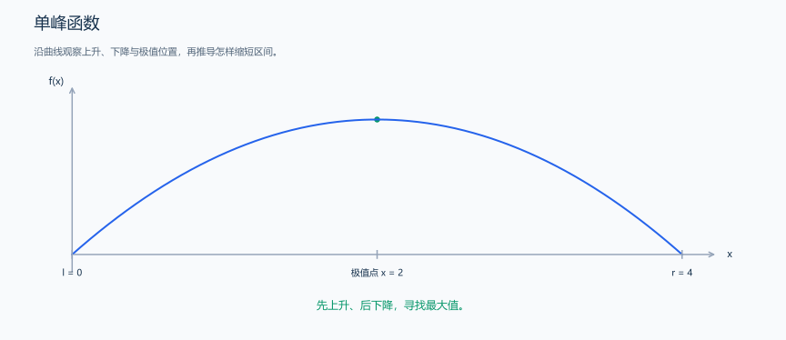
图中的绿色点是最大值位置，区间内只有一个峰。
单谷函数：
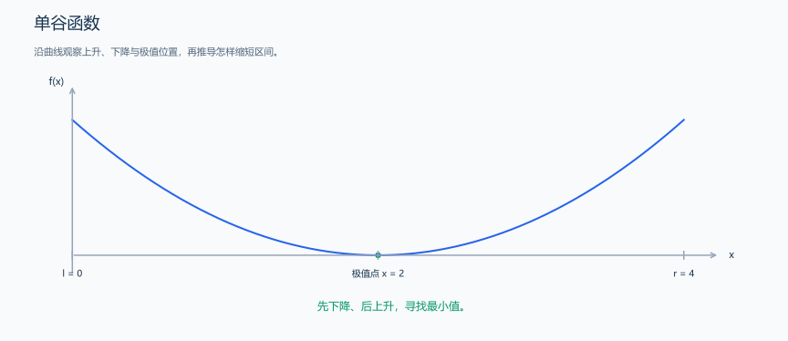
图中的绿色点是最小值位置；求最小值时需要相应调整比较方向。
下面以单峰函数为例
在区间 \([l,r]\) 中取两点 \(mid1\) , \(mid2\)
且 \[ mid1 = l+\frac{r-l}{3}, mid2 = r-\frac{r-l}{3} \] 则对于 \(f(mid1)\) 和 \(f(mid2)\) 的关系有：
- \(f(mid2)>f(mid1)\) 时，有两种情况：
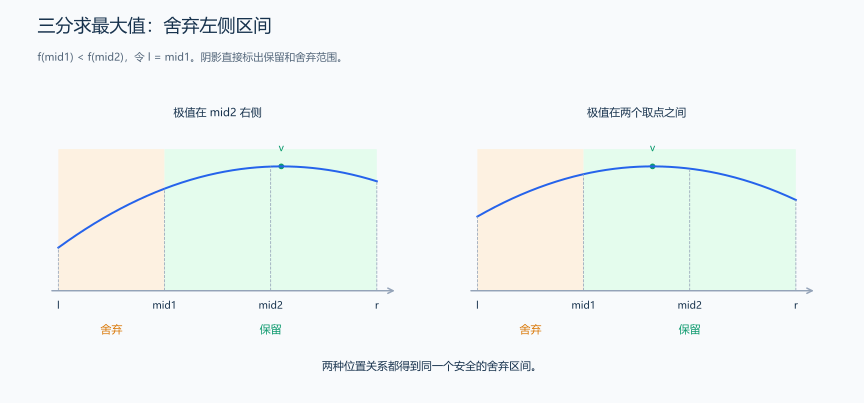
两种极值位置都满足 f(mid1) < f(mid2)：橙色左段可舍弃，绿色范围继续搜索。
以上两种情况都有，极值点 \(v\) 在 \(mid1\) 的右边，因此每次迭代使得 \(l=mid1\) ，即使区间缩减为 \([mid1,r]\) ，并再次取两点分出三段逐步逼近即可
- \(f(mid1)>f(mid2)\) 时，也有两种情况：
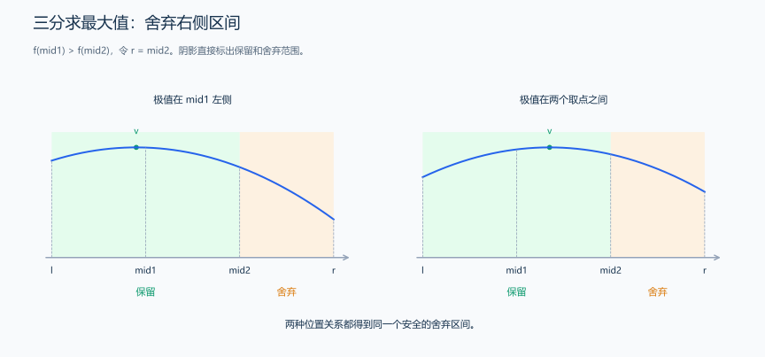
两种极值位置都满足 f(mid1) > f(mid2)：橙色右段可舍弃，绿色范围继续搜索。
以上两种情况都有，极值点 \(v\) 在 \(mid2\) 的左边，因此每次迭代使得 \(r=mid2\) ，即使区间缩减为 \([l,mid2]\) ，并再次取两点分出三段逐步逼近即可
2.4 实数与整数三分的实现
与二分算法类似，由于除法的取整方向的问题，也需要划分出整数三分或实数三分
2.4.1 实数三分：缩小区间逼近峰顶
题目原文（自拟）： 输入一个 N 次多项式的系数，从最高次项到常数项依次保存为 a[0..N]，以及有限区间 [l,r]。保证多项式在区间内先严格上升、后严格下降，只有一个最大值点；使用 double 计算函数值。求最大值点 x 的浮点近似。教学样例使用 N=2、系数 [-1,4,0]、区间 [0,4]，要求绝对误差不超过 1e-6。
思路分析： 每轮取两个三等分点。左点的函数值较小时，峰顶不在最左的三分之一，因此移动左边界；否则移动右边界。比较的是函数值，最终返回的是自变量 x，两者不能混淆。求最小值的模板将比较方向反过来，对应的曲线则先下降、后上升。
多项式不要每次分别计算所有幂。按 \((((a_0x+a_1)x+a_2)x+\cdots)x+a_N\) 逐项乘加，这就是秦九韶算法。poly_func(x,a,N) 要求系数恰好有 N+1 项；它每次求值花 \(O(N)\) 时间。
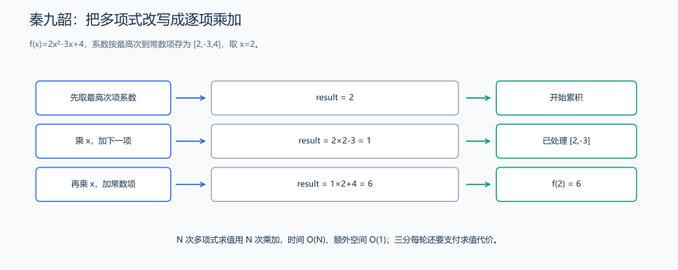
图用 2x²-3x+4 在 x=2 的求值过程说明乘加顺序；三分样例的系数不同，但求值方法相同。
#include <vector>
using namespace std;
const double eps = 1e-6; // 精度阈值
double poly_func(double x, vector<double> const &a, int n) {
double result = a[0]; // 初始化为最高次项系数
for (int i = 1; i <= n; ++i) {
result = result * x + a[i]; // 秦九韶算法迭代
}
return result;
}
template <typename Func> double ternary_search_max(Func f, double l, double r) {
// 方法1：固定迭代次数（避免无限循环，仍须检查精度要求）
for (int i = 0; i < 100; ++i) {
double k = (r - l) / 3.0;
double mid1 = l + k; // 左三等分点
double mid2 = r - k; // 右三等分点
if (f(mid1) < f(mid2)) {
l = mid1; // 最大值在[mid1, r]区间
} else {
r = mid2; // 最大值在[l, mid2]区间
}
}
return (l + r) / 2.0; // 返回区间中点作为近似最优解
}
template <typename Func> double ternary_search_min(Func f, double l, double r) {
for (int i = 0; i < 100; ++i) {
double k = (r - l) / 3.0;
double mid1 = l + k;
double mid2 = r - k;
if (f(mid1) > f(mid2)) { // 注意：这里比较符号与求最大值相反
l = mid1; // 最小值在[mid1, r]区间
} else {
r = mid2; // 最小值在[l, mid2]区间
}
}
return (l + r) / 2.0;
}样例与解释： 对 f(x)=-x²+4x，在 [0,4] 上先上升后下降，最大值点是 x=2，函数最大值为 4。调用 ternary_search_max 时，将系数数组捕获到一个 lambda 中，再用 poly_func 计算传入位置的函数值。返回结果约为 2；若题目还要最大函数值，再对返回点求一次值。
复杂度与精度： 上面的三分固定迭代 100 次，每轮两次多项式求值，所以总计算量约为 200N，时间 \(O(100N)\)，除系数存储外额外空间 \(O(1)\)。若用误差作为停止条件，理论轮数为 \(O(\log((r-l)/eps))\)，总时间还要乘上求值代价。每轮区间宽度变为原来的 2/3，因此初始宽度为 L 时，t 轮后约剩 L*(2/3)^t。把这个宽度与题目允许的位置误差相比，就能估算需要多少轮。
练习题： 洛谷 P3382 — 三分法。
2.4.2 整数三分：比较取点后枚举剩余值
整数三分 用于在 离散整数区间 \([l, r]\) 上，寻找一个函数的极值点（最大值或最小值）
题目原文（自拟）： 给定整数 l、r、k、c，l<=r，l、r、k 的绝对值不超过 10⁶，c 的绝对值不超过 10¹²。在整数闭区间 [l,r] 内寻找 f(x)=-(x-k)²+c 的最大值位置，若有多个最优位置返回一个即可；最大值可由 f(返回位置) 计算。下面用全局参数 k、c 与函数接口演示。
推导与样例： 抛物线在顶点 k 左侧上升、右侧下降。取两个三等分点，左值小于右值时可以排除更左侧，反之保留左侧与中间。剩余区间太短时枚举，不依赖浮点精度。l=-3、r=9、k=3、c=10 时返回位置 3，最大值为 10；k 不在区间时最优点是较靠近 k 的端点。
复杂度与练习： 假设 f 为 O(1)，三分时间 O(log(r-l+1))、空间 O(1)；固定抛物线的解析解为 O(1)。洛谷 P3382 — 三分法（多项式实数单峰题，使用实数版本）。
| 项目 | 整数三分 | 实数三分 |
|---|---|---|
| 区间 | 离散整数 | 连续实数 |
| 终止条件 | 区间长度很小 | 精度误差 |
| 结尾处理 | 暴力枚举剩余点 | 取中点 |
| 易错点 | 死循环 | 精度不足 |
例题：
给定一个定义在整数区间 \([l, r]\) 上的函数： \[ f(x) = - (x - k)^2 + c \] 其中 \(l \le x \le r\)，\(l, r, k, c\) 均为整数。请你找出 使函数值最大的整数 \(x\)，并输出这个最大值。
图示 f(x)=-(x-3)²+10，在 [1,4] 中逐个比较 1、2、3、4，避免整数取整使区间不再缩小。
代码组合方式： 前三段共享第一段的头文件、ll、k、c 和 f；模板也使用 ll。函数名各不相同，可以放进同一文件。
1. 明确函数和返回值
以 f(x)=-(x-k)²+c 为例，越靠近 k，函数值越大。现在从整数区间 [l,r] 中寻找最大值的位置；函数返回位置 best，再计算 f(best) 就得到最大函数值。
// 示例函数为 f(x)=-(x-k)²+c。
#include <algorithm>
using namespace std;
using ll = long long;
ll k, c; // 抛物线参数：顶点在(k, c)
ll f(ll x) {
ll diff = x - k;
return -(diff * diff) + c; // 避免使用pow，提高效率
}2. 三分缩区间，再枚举剩余整数
整数区间不能依赖无限缩小。当前代码在 r-l<=3 时直接枚举所有剩余点，比较值后保存最优位置，避免取整导致区间停滞。
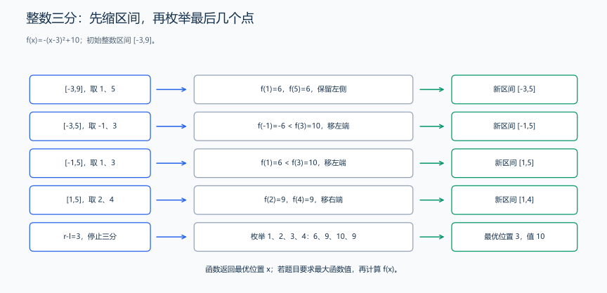
逐步缩小整数区间并枚举最后四个候选。
// 整数区间不能依赖无限缩小。
ll ternary_search(ll l, ll r) {
// 边界检查
if (l > r)
return -1; // 无效区间
// 特殊情况处理：区间长度很小直接暴力
if (r - l + 1 <= 3) {
ll best = l;
for (ll x = l + 1; x <= r; x++) {
if (f(x) > f(best))
best = x;
}
return best;
}
// 三分阶段：不断缩小搜索区间
while (r - l > 3) { // 区间长度>3时继续三分
ll mid1 = l + (r - l) / 3; // 左三等分点
ll mid2 = r - (r - l) / 3; // 右三等分点
// 比较两个三等分点的函数值
if (f(mid1) < f(mid2))
l = mid1; // 峰值在[mid1, r]区间
else
r = mid2; // 峰值在[l, mid2]区间
}
// 暴力阶段：枚举剩余的所有点
ll best = l;
for (ll x = l + 1; x <= r; x++) {
if (f(x) > f(best))
best = x;
}
return best;
}3. 已知顶点时使用解析解
这条抛物线在 k 处最高。k 在区间内就取 k；在左侧就取 l，在右侧就取 r，因此答案是把 k 限制到 [l,r]。这是该函数的特定性质，不能当成任意单峰函数的解法。
// 这条抛物线在 k 处最高。
ll optimal_solution(ll l, ll r) {
if (l > r)
return -1;
return max(l, min(r, k));
}4. 抽出可复用的整数三分模板
这里继续使用 ll 表示 long long。以峰形的整数函数为例，区间较长时比较两个三等分点，沿上一节推导的方向缩短区间；只剩少量整数时逐个计算并选出最大值。谷形函数则反过来比较，最终逐个取最小值。
// ll 表示 long long；本函数比较峰形曲线上的两个取点，最后逐个检查剩余整数。
template <typename Func> ll integer_ternary_search(Func f, ll l, ll r) {
while (r - l > 3) {
ll mid1 = l + (r - l) / 3;
ll mid2 = r - (r - l) / 3;
if (f(mid1) < f(mid2))
l = mid1;
else
r = mid2;
}
ll best = l;
for (ll x = l + 1; x <= r; x++) {
if (f(x) > f(best))
best = x;
}
return best;
}使用暴力搜索的原因，在整数域中：
mid1和mid2可能相等- 区间长度小的时候三分 不再缩小区间
- 容易死循环或漏最优点
所以统一策略是：
当 r - l <= 3，直接枚举
以下情况 不能用 整数三分：
- 函数 不单峰
- 有多个局部极值
- 函数是“阶梯型”或“锯齿型”
- 题目本质是 二分答案 + 判定
若目标能转换成单调可行性边界，就分析二分答案；若直接优化单峰函数，再考虑三分。选择方法需要依据题目的结构。
2.5 二分与三分的判定方式对照
| 对比点 | 二分 | 三分 |
|---|---|---|
| 目标 | 找边界 / 判定条件 | 找极值 |
| 函数要求 | 单调 | 单峰 / 单谷 |
| 每轮比较 | 1 次 | 2 次 |
| 时间复杂度 | \(O(\log_2 n)\) | \(O(\log n)\)（每轮约保留 2/3） |
| 常见用途 | 判定、最小可行解 | 最大/最小函数值 |
2.6 从求根、判定与求极值选择搜索方式
(1). 物理问题
- 最短距离
- 最小能量
- 最优角度
(2).几何问题
- 点到曲线最短距离
- 最大面积 / 最小周长
(3).算法竞赛常见
- 函数最值优化
- 与 DP / 贪心 结合
练习题： 洛谷 P3382 — 三分。